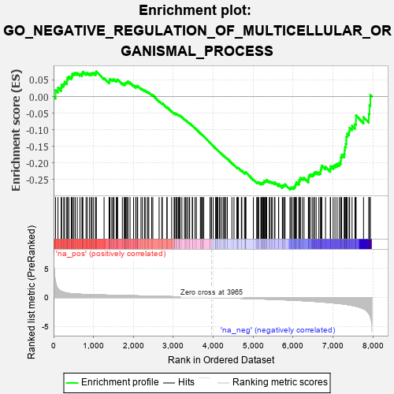
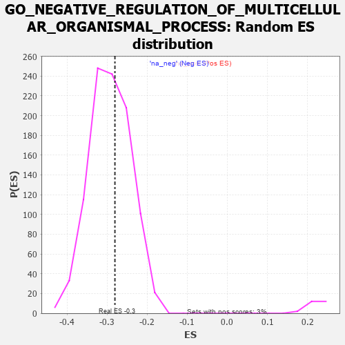

| | | Dataset | 7d |
| Phenotype | NoPhenotypeAvailable |
| Upregulated in class | na_neg |
| GeneSet | GO_NEGATIVE_REGULATION_OF_MULTICELLULAR_ORGANISMAL_PROCESS |
| Enrichment Score (ES) | -0.2806485 |
| Normalized Enrichment Score (NES) | -0.96108854 |
| Nominal p-value | 0.5903491 |
| FDR q-value | 0.9034009 |
| FWER p-Value | 1.0 |
Table: GSEA Results Summary

Fig 1: Enrichment plot: GO_NEGATIVE_REGULATION_OF_MULTICELLULAR_ORGANISMAL_PROCESS
Profile of the Running ES Score & Positions of GeneSet Members on the Rank Ordered List
| PROBE | GENE SYMBOL | GENE_TITLE | RANK IN GENE LIST | RANK METRIC SCORE | RUNNING ES | CORE ENRICHMENT | | 1 | TGFB3 | | | 49 | 2.654 | 0.0196 | No |
| 2 | DISP3 | | | 110 | 1.525 | 0.0267 | No |
| 3 | RORB | | | 189 | 1.097 | 0.0274 | No |
| 4 | BCL3 | | | 202 | 1.047 | 0.0360 | No |
| 5 | LBX1 | | | 254 | 0.929 | 0.0385 | No |
| 6 | HGF | | | 276 | 0.870 | 0.0443 | No |
| 7 | WEE2 | | | 333 | 0.766 | 0.0446 | No |
| 8 | DLL1 | | | 337 | 0.760 | 0.0516 | No |
| 9 | GSK3A | | | 351 | 0.745 | 0.0572 | No |
| 10 | AXIN2 | | | 383 | 0.713 | 0.0601 | No |
| 11 | SUFU | | | 443 | 0.665 | 0.0590 | No |
| 12 | LEO1 | | | 463 | 0.655 | 0.0629 | No |
| 13 | LRP1 | | | 470 | 0.648 | 0.0685 | No |
| 14 | THOC1 | | | 507 | 0.627 | 0.0700 | No |
| 15 | SRF | | | 542 | 0.615 | 0.0716 | No |
| 16 | PITX3 | | | 594 | 0.596 | 0.0708 | No |
| 17 | HES5 | | | 661 | 0.571 | 0.0679 | No |
| 18 | VASH1 | | | 712 | 0.556 | 0.0669 | No |
| 19 | ID1 | | | 719 | 0.555 | 0.0715 | No |
| 20 | WDR61 | | | 734 | 0.549 | 0.0751 | No |
| 21 | GLRX3 | | | 813 | 0.529 | 0.0702 | No |
| 22 | NRDC | | | 845 | 0.521 | 0.0712 | No |
| 23 | HDAC5 | | | 900 | 0.506 | 0.0692 | No |
| 24 | PDCD4 | | | 941 | 0.497 | 0.0689 | No |
| 25 | CTR9 | | | 964 | 0.492 | 0.0709 | No |
| 26 | MEN1 | | | 1003 | 0.483 | 0.0707 | No |
| 27 | MEF2C | | | 1054 | 0.473 | 0.0689 | No |
| 28 | RBM15 | | | 1057 | 0.473 | 0.0732 | No |
| 29 | RAI1 | | | 1071 | 0.469 | 0.0761 | No |
| 30 | CDC73 | | | 1265 | 0.436 | 0.0555 | No |
| 31 | FKBP4 | | | 1390 | 0.412 | 0.0435 | No |
| 32 | DOCK7 | | | 1398 | 0.410 | 0.0466 | No |
| 33 | NOCT | | | 1402 | 0.409 | 0.0502 | No |
| 34 | CARM1 | | | 1413 | 0.408 | 0.0529 | No |
| 35 | VASN | | | 1459 | 0.398 | 0.0510 | No |
| 36 | IFRD1 | | | 1486 | 0.392 | 0.0515 | No |
| 37 | INHBB | | | 1514 | 0.388 | 0.0518 | No |
| 38 | CNTN4 | | | 1571 | 0.379 | 0.0482 | No |
| 39 | PAF1 | | | 1588 | 0.376 | 0.0498 | No |
| 40 | RNF6 | | | 1605 | 0.373 | 0.0514 | No |
| 41 | MEIS1 | | | 1723 | 0.351 | 0.0398 | No |
| 42 | LRP5 | | | 1769 | 0.342 | 0.0373 | No |
| 43 | STRAP | | | 1793 | 0.339 | 0.0376 | No |
| 44 | THOC2 | | | 1796 | 0.338 | 0.0407 | No |
| 45 | ABR | | | 1812 | 0.335 | 0.0420 | No |
| 46 | RNF10 | | | 1833 | 0.331 | 0.0427 | No |
| 47 | SMAD4 | | | 1860 | 0.326 | 0.0425 | No |
| 48 | TLE3 | | | 1863 | 0.325 | 0.0454 | No |
| 49 | DDX6 | | | 1915 | 0.318 | 0.0419 | No |
| 50 | FOXO4 | | | 2004 | 0.304 | 0.0336 | No |
| 51 | LUC7L | | | 2060 | 0.297 | 0.0294 | No |
| 52 | MEIS2 | | | 2063 | 0.296 | 0.0320 | No |
| 53 | LSM1 | | | 2098 | 0.291 | 0.0304 | No |
| 54 | BMP7 | | | 2107 | 0.290 | 0.0322 | No |
| 55 | C1QBP | | | 2189 | 0.278 | 0.0245 | No |
| 56 | MYLIP | | | 2225 | 0.272 | 0.0226 | No |
| 57 | EAF2 | | | 2278 | 0.263 | 0.0185 | No |
| 58 | REST | | | 2308 | 0.259 | 0.0173 | No |
| 59 | RNLS | | | 2358 | 0.252 | 0.0134 | No |
| 60 | OTUD5 | | | 2385 | 0.247 | 0.0125 | No |
| 61 | PGAM5 | | | 2457 | 0.235 | 0.0056 | No |
| 62 | ZC3H8 | | | 2486 | 0.229 | 0.0043 | No |
| 63 | KAT5 | | | 2644 | 0.206 | -0.0140 | No |
| 64 | PHB2 | | | 2712 | 0.197 | -0.0207 | No |
| 65 | SLIT2 | | | 2724 | 0.195 | -0.0202 | No |
| 66 | PHF14 | | | 2838 | 0.178 | -0.0330 | No |
| 67 | NR2E1 | | | 2844 | 0.177 | -0.0319 | No |
| 68 | BTK | | | 2958 | 0.156 | -0.0450 | No |
| 69 | WNT4 | | | 3023 | 0.146 | -0.0518 | No |
| 70 | BRCA2 | | | 3024 | 0.146 | -0.0504 | No |
| 71 | LEF1 | | | 3037 | 0.144 | -0.0505 | No |
| 72 | PROS1 | | | 3070 | 0.141 | -0.0533 | No |
| 73 | MAP2 | | | 3074 | 0.140 | -0.0523 | No |
| 74 | CUL4A | | | 3097 | 0.137 | -0.0538 | No |
| 75 | MTMR2 | | | 3126 | 0.133 | -0.0561 | No |
| 76 | TLX3 | | | 3140 | 0.131 | -0.0565 | No |
| 77 | SFRP5 | | | 3154 | 0.129 | -0.0569 | No |
| 78 | PAX6 | | | 3170 | 0.127 | -0.0576 | No |
| 79 | PRDX4 | | | 3214 | 0.120 | -0.0620 | No |
| 80 | CTDP1 | | | 3279 | 0.109 | -0.0692 | No |
| 81 | SMAD3 | | | 3303 | 0.105 | -0.0711 | No |
| 82 | RFX4 | | | 3334 | 0.099 | -0.0740 | No |
| 83 | SMAD7 | | | 3369 | 0.093 | -0.0775 | No |
| 84 | MED1 | | | 3405 | 0.089 | -0.0811 | No |
| 85 | TRAIP | | | 3408 | 0.088 | -0.0805 | No |
| 86 | HGS | | | 3476 | 0.080 | -0.0884 | No |
| 87 | CDK5 | | | 3480 | 0.080 | -0.0880 | No |
| 88 | PIN1 | | | 3543 | 0.069 | -0.0953 | No |
| 89 | GPR18 | | | 3578 | 0.063 | -0.0991 | No |
| 90 | ABCD1 | | | 3677 | 0.047 | -0.1112 | No |
| 91 | EPN2 | | | 3691 | 0.045 | -0.1125 | No |
| 92 | NF1 | | | 3713 | 0.040 | -0.1148 | No |
| 93 | HSF1 | | | 3718 | 0.039 | -0.1149 | No |
| 94 | SYT11 | | | 3732 | 0.036 | -0.1163 | No |
| 95 | SKI | | | 3762 | 0.032 | -0.1197 | No |
| 96 | IFIH1 | | | 3919 | 0.006 | -0.1397 | No |
| 97 | NRG3 | | | 3925 | 0.005 | -0.1403 | No |
| 98 | GLRA1 | | | 3957 | 0.001 | -0.1443 | No |
| 99 | DDX58 | | | 3998 | -0.007 | -0.1494 | No |
| 100 | TAL1 | | | 4064 | -0.018 | -0.1576 | No |
| 101 | SFRP2 | | | 4065 | -0.018 | -0.1574 | No |
| 102 | ROBO2 | | | 4066 | -0.018 | -0.1572 | No |
| 103 | PDE4B | | | 4089 | -0.022 | -0.1598 | No |
| 104 | CHID1 | | | 4099 | -0.023 | -0.1608 | No |
| 105 | MTOR | | | 4114 | -0.025 | -0.1623 | No |
| 106 | WNK3 | | | 4153 | -0.034 | -0.1669 | No |
| 107 | GFI1 | | | 4168 | -0.037 | -0.1684 | No |
| 108 | TIMP1 | | | 4209 | -0.043 | -0.1731 | No |
| 109 | GAK | | | 4249 | -0.050 | -0.1776 | No |
| 110 | WNT11 | | | 4282 | -0.056 | -0.1812 | No |
| 111 | USF1 | | | 4296 | -0.059 | -0.1823 | No |
| 112 | TBX2 | | | 4303 | -0.060 | -0.1825 | No |
| 113 | FIG4 | | | 4348 | -0.068 | -0.1875 | No |
| 114 | ADRB2 | | | 4352 | -0.068 | -0.1872 | No |
| 115 | LRRK2 | | | 4467 | -0.087 | -0.2011 | No |
| 116 | NPTN | | | 4519 | -0.098 | -0.2067 | No |
| 117 | SYT4 | | | 4590 | -0.116 | -0.2146 | No |
| 118 | ADTRP | | | 4612 | -0.120 | -0.2161 | No |
| 119 | GATA3 | | | 4614 | -0.120 | -0.2151 | No |
| 120 | LMX1A | | | 4631 | -0.124 | -0.2159 | No |
| 121 | ARF6 | | | 4704 | -0.140 | -0.2238 | No |
| 122 | LHX2 | | | 4716 | -0.143 | -0.2239 | No |
| 123 | RTN4 | | | 4783 | -0.154 | -0.2309 | No |
| 124 | TERT | | | 4801 | -0.157 | -0.2315 | No |
| 125 | PLCL2 | | | 4807 | -0.159 | -0.2306 | No |
| 126 | P2RX4 | | | 4813 | -0.161 | -0.2297 | No |
| 127 | FBXW7 | | | 4816 | -0.161 | -0.2284 | No |
| 128 | KLF4 | | | 5005 | -0.198 | -0.2507 | No |
| 129 | DRD2 | | | 5088 | -0.221 | -0.2591 | No |
| 130 | MMP9 | | | 5108 | -0.227 | -0.2593 | No |
| 131 | NOVA2 | | | 5118 | -0.231 | -0.2582 | No |
| 132 | FLCN | | | 5140 | -0.235 | -0.2586 | No |
| 133 | SMO | | | 5195 | -0.247 | -0.2632 | No |
| 134 | NOVA1 | | | 5197 | -0.247 | -0.2609 | No |
| 135 | GPR4 | | | 5219 | -0.250 | -0.2612 | No |
| 136 | KRIT1 | | | 5248 | -0.257 | -0.2623 | No |
| 137 | FOXJ2 | | | 5249 | -0.257 | -0.2598 | No |
| 138 | PTEN | | | 5262 | -0.261 | -0.2588 | No |
| 139 | EPHA4 | | | 5273 | -0.265 | -0.2575 | No |
| 140 | CELF4 | | | 5275 | -0.266 | -0.2550 | No |
| 141 | EPN1 | | | 5304 | -0.272 | -0.2560 | No |
| 142 | CD9 | | | 5319 | -0.277 | -0.2551 | No |
| 143 | NPY2R | | | 5331 | -0.281 | -0.2538 | No |
| 144 | TOB2 | | | 5337 | -0.282 | -0.2517 | No |
| 145 | SOX8 | | | 5404 | -0.296 | -0.2573 | No |
| 146 | PPM1B | | | 5422 | -0.300 | -0.2565 | No |
| 147 | LRIG2 | | | 5460 | -0.310 | -0.2583 | No |
| 148 | ACTN3 | | | 5486 | -0.315 | -0.2584 | No |
| 149 | PCBP2 | | | 5539 | -0.331 | -0.2619 | No |
| 150 | FGFR1 | | | 5543 | -0.332 | -0.2591 | No |
| 151 | ASPM | | | 5637 | -0.358 | -0.2676 | No |
| 152 | G6PD | | | 5638 | -0.358 | -0.2641 | No |
| 153 | TIA1 | | | 5731 | -0.386 | -0.2722 | No |
| 154 | SLIT1 | | | 5735 | -0.387 | -0.2688 | No |
| 155 | TLR2 | | | 5761 | -0.395 | -0.2681 | No |
| 156 | TRPC6 | | | 5784 | -0.401 | -0.2671 | No |
| 157 | ADA | | | 5798 | -0.405 | -0.2648 | No |
| 158 | STK11 | | | 5922 | -0.443 | -0.2763 | Yes |
| 159 | LDB1 | | | 5944 | -0.451 | -0.2746 | Yes |
| 160 | GABPA | | | 5977 | -0.464 | -0.2742 | Yes |
| 161 | TLL2 | | | 6020 | -0.478 | -0.2750 | Yes |
| 162 | RAC1 | | | 6036 | -0.484 | -0.2722 | Yes |
| 163 | EVL | | | 6052 | -0.490 | -0.2694 | Yes |
| 164 | JAG1 | | | 6060 | -0.494 | -0.2654 | Yes |
| 165 | CALR | | | 6077 | -0.499 | -0.2626 | Yes |
| 166 | FBN1 | | | 6080 | -0.499 | -0.2580 | Yes |
| 167 | STK4 | | | 6145 | -0.518 | -0.2612 | Yes |
| 168 | FEZF2 | | | 6150 | -0.519 | -0.2567 | Yes |
| 169 | ROCK1 | | | 6152 | -0.520 | -0.2517 | Yes |
| 170 | THRB | | | 6178 | -0.531 | -0.2498 | Yes |
| 171 | KLF2 | | | 6182 | -0.532 | -0.2450 | Yes |
| 172 | RGN | | | 6233 | -0.547 | -0.2461 | Yes |
| 173 | STK39 | | | 6274 | -0.563 | -0.2458 | Yes |
| 174 | BBS2 | | | 6383 | -0.608 | -0.2538 | Yes |
| 175 | ISG15 | | | 6385 | -0.608 | -0.2480 | Yes |
| 176 | TRPM4 | | | 6390 | -0.612 | -0.2425 | Yes |
| 177 | CDKL3 | | | 6401 | -0.618 | -0.2378 | Yes |
| 178 | CSK | | | 6428 | -0.630 | -0.2350 | Yes |
| 179 | SOX2 | | | 6477 | -0.652 | -0.2348 | Yes |
| 180 | TRPV4 | | | 6515 | -0.668 | -0.2330 | Yes |
| 181 | KANK1 | | | 6536 | -0.678 | -0.2290 | Yes |
| 182 | ROBO1 | | | 6577 | -0.699 | -0.2273 | Yes |
| 183 | PTPRS | | | 6646 | -0.738 | -0.2289 | Yes |
| 184 | CERS2 | | | 6689 | -0.756 | -0.2269 | Yes |
| 185 | PAK1 | | | 6691 | -0.757 | -0.2197 | Yes |
| 186 | EGFR | | | 6708 | -0.765 | -0.2143 | Yes |
| 187 | GSK3B | | | 6719 | -0.768 | -0.2081 | Yes |
| 188 | PAQR3 | | | 6812 | -0.819 | -0.2120 | Yes |
| 189 | MIB1 | | | 6932 | -0.890 | -0.2186 | Yes |
| 190 | GHSR | | | 6937 | -0.894 | -0.2104 | Yes |
| 191 | CCR2 | | | 7003 | -0.939 | -0.2096 | Yes |
| 192 | PIBF1 | | | 7049 | -0.966 | -0.2060 | Yes |
| 193 | RYK | | | 7102 | -1.000 | -0.2030 | Yes |
| 194 | UFD1 | | | 7157 | -1.040 | -0.1998 | Yes |
| 195 | TSPO | | | 7194 | -1.065 | -0.1940 | Yes |
| 196 | OVOL2 | | | 7197 | -1.068 | -0.1839 | Yes |
| 197 | KLKB1 | | | 7216 | -1.090 | -0.1756 | Yes |
| 198 | CIB1 | | | 7280 | -1.152 | -0.1724 | Yes |
| 199 | PARP3 | | | 7289 | -1.158 | -0.1622 | Yes |
| 200 | MSX2 | | | 7299 | -1.171 | -0.1519 | Yes |
| 201 | GRN | | | 7319 | -1.194 | -0.1427 | Yes |
| 202 | CYLD | | | 7333 | -1.206 | -0.1326 | Yes |
| 203 | NGEF | | | 7335 | -1.209 | -0.1210 | Yes |
| 204 | PLAC8 | | | 7355 | -1.223 | -0.1115 | Yes |
| 205 | LOXL2 | | | 7403 | -1.269 | -0.1052 | Yes |
| 206 | TPH1 | | | 7416 | -1.286 | -0.0942 | Yes |
| 207 | CPTP | | | 7477 | -1.373 | -0.0885 | Yes |
| 208 | DCC | | | 7550 | -1.470 | -0.0834 | Yes |
| 209 | NLRC3 | | | 7574 | -1.515 | -0.0716 | Yes |
| 210 | TTPA | | | 7575 | -1.516 | -0.0568 | Yes |
| 211 | PDE4D | | | 7764 | -1.944 | -0.0621 | Yes |
| 212 | CAV3 | | | 7896 | -2.739 | -0.0523 | Yes |
| 213 | PI16 | | | 7914 | -2.948 | -0.0257 | Yes |
| 214 | ARRB1 | | | 7935 | -3.377 | 0.0046 | Yes |
Table: GSEA details [plain text format]

Fig 2: GO_NEGATIVE_REGULATION_OF_MULTICELLULAR_ORGANISMAL_PROCESS: Random ES distribution
Gene set null distribution of ES for GO_NEGATIVE_REGULATION_OF_MULTICELLULAR_ORGANISMAL_PROCESS